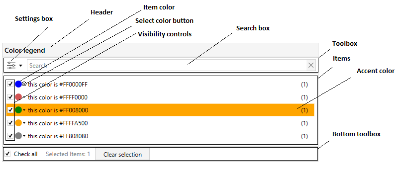

This control manages color collection. It can hide/show, select and change colors.
Inherits from System.Windows.Controls.HeaderedContentControl.

Properties
| Property name | Description |
|---|---|
| AccentColorBrush | Get or sets accent color |
| AllowColorEditing | Gets or sets a whether color can be edited. |
| EditingColor | Gets or sets whether user editing current color. |
| Filter | Gets or sets filter for list of color. |
| FilteredItemsIds | Gets or sets the filtered items ids. |
| FilteredItemsSource | Gets or sets a source for color items respecting current filter value. |
| FilterWatermark | Gets or sets filter watermark string we use in search textbox. |
| ItemsSource | Gets or sets source for color items. |
| IsAllVisible | Gets or sets whether is all visible. |
| IsColorSelecting | Gets or sets whether user editing current color. |
| SelectedColorItems | Gets or sets list of selected items. |
| ShowBottomToolBox | Gets or sets whether bottom tool box is visible. |
| ShowColorVisibilityControls | Gets or sets whether visibility controls are visible. |
| ShowSearchBox | Gets or sets whether search box is visible. |
| ShowSettingsBox | Gets or sets whether settings button is visible. |
| ShowToolBox | Gets or sets whether tool box is visible. |
| OperationColorAttribute Will be removed in v2.0! | Gets or sets the operation color attribute. |
| ShowSettings Will be removed in v2.0! | Gets or sets whether settings button is visible. |
| UseRegexFiltering Will be removed in v2.0! | Gets or sets whether regex is used when search is performed. |
Events
| Event name | Description |
|---|---|
| SelectionChanged | Occurs when selected color item changed |
How to use
When using the ColorLegend in data binding scenarios, bind your color items collection to ItemsSource property. You can show/hide ToolBox, BottomToolBox, ColorVisibilityControls, SearchBox, SettingsBox by setting the appropriate flags. Bind to SelectedColorItems property to get current selection.
Because the ColorLegend is inherits from the HeaderedContentControl you can specify its header as shown in the example.
<orc:ColorLegend ItemsSource="{Binding ColorItems}"
AllowColorEditing="True"
ShowColorVisibilityControls="True"
ShowSettingsBox="False"
SelectedColorItems="{Binding SelectedColorItems}">
<orc:ColorLegend.Header>
<orc:HeaderBar Header="This is ColorLegend header"/>
</orc:ColorLegend.Header>
</orc:ColorLegend>